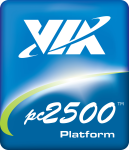

Instalación de Gentoo Linux para el Via pc2500 con carga por red (LAN boot)
Guillermo Valdés Lozano
2007-10-24 23:00:00-05:00
Después de un arduo trabajo de investigación, he terminado de elaborar un detallado manual sobre cómo instalar Gentoo Linux en la computadora VIA pc2500 con la modalidad de que tome el sistema operativo desde otro equipo. Esto nos permite que sea una computadora sin disco duro.

¿Para qué serviría esto? he aquí algunas buenas ideas:
- Armar un salón de clases con 10 o 20 equipos. Podrá crear un S.O. a la medida de sus necesidades; o también crear distintos S.O. para enseñar distintos paquetes, por ejemplo, un S.O. con Gnome y otro con KDE.
- Crear un conjunto de equipos que realizen una misma tarea o que trabajen en conjunto como una supercomputadora.
- Como un centro de entretenimiento; si tiene una red local en su hogar, podrá reproducir los archivos multimedia que se encuentren en otra computadora.
En este manual se estudian varios conceptos interesantes sobre GNU/Linux, algunos de los cuales son:
- La carga de un GNU/Linux desde otro equipo por red local.
- La instalación de un nuevo Gentoo Linux, alojado en un Servidor, para otro equipo distinto.
- Compartición de directorios por NFS.
- Uso de discos virtuales en RAM, o sea, ramdisks.
El manual fue elaborado en LaTeX el cual me permite entregarlo en tres formas: